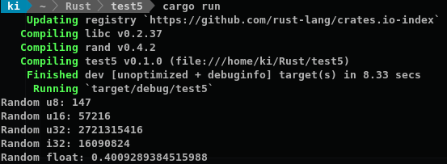
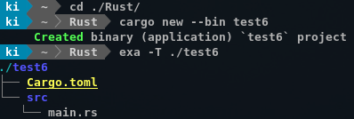
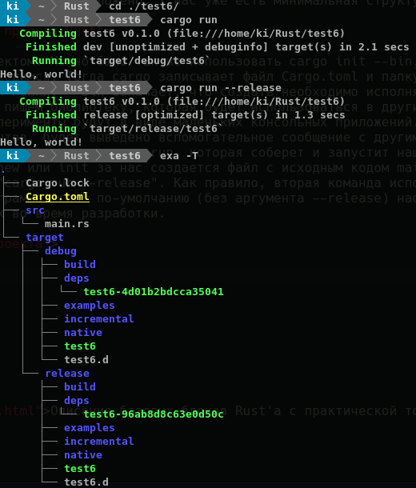

Элементарные частицы
Пример
Приступаем к делу. Язык программирования, как и человеческий язык, работает с определенными словами по определенным правилам. Синтаксис Rust, как и языков C и Java, использует фигурные скобки { } для выделения логических блоков, точки для обращения к содержимому, сверху так же обычно находятся подключаемые модули... Раст старается брать проверенное, и выстраивать на нем свои новшества.
extern crate rand; // Подключить внешний модуль случайных чисел
use rand::Rng; // Позволяет использовать свойство (trait) Rng
fn main() { // Основная функция программы
let mut rng = rand::thread_rng();
let n1: u8 = rng.gen();
let n2: u16 = rng.gen();
println!("Random u8: {}", n1);
println!("Random u16: {}", n2);
println!("Random u32: {}", rng.gen::<u32>());
println!("Random i32: {}", rng.gen::<i32>());
println!("Random float: {}", rng.gen::<f64>());
}
Эта программа генерирует случайные числа. В качестве результата выполнения получаем такой вывод в консоль: 
Процесс создания прокета
Rust можно установить, следуя инструкциям с оффициального сайта. В стандартный комплект входят несколько программ. Rustup позволяет установить или сменить версию инструментов разработки; Cargo - система "ящиков" (crate) языка раст, занимается отслеживанием зависимостей, созданием проектов, загрузкой проектов в хранилище; rustc - компилятор, в нескольких версиях. Я выберу stable версию, она обновляется каждые 6 недель. Можно так же установить дополнение к текстовому редактору или интегрированной среде разработки, обеспечивающее поддержку языка Rust. Их уже вполне достаточно, хотя разработка еще не закончена, ведь язык достаточно новый. Про них можно посмотреть здесь или здесь.
Допустим, проблем с установкой инструментов не возникло. Теперь нужно понять устройство одного захода, "сбор информации -> написание кода -> компиляция". Это минимальный возможный цикл, он позволяет сразу после прочтения главы или просмотра ролика испытать изученное на практике, провести эксперимент. Информацию искать - исскуство. Книги, видео, интернет. Можно собирать свою информацию, на практике смотреть, что работает, а что не работает. Как и какой код писать - в этом вся суть, будем изучать далее. Процесс создания проекта или компиляции в расте весьма прост, спасибо утилите cargo. Процесс создания проекта через консоль (у меня - линукс, that's how I roll) будет описан далее. Инструкции для каждой IDE или редактора немного различается, но любая современная консоль будет вести себя более-менее одинаково.
Для начала, следует создать папку для своих проектов. Каждый проект раст будет находиться в своей папке, и чтобы они не путались я их буду размещать в папке Rust. Через консоль зайдем в эту папку, запустим волшебную команду cargo new --bin [имя проекта] и вуаля, начало положено. У нас уже есть минимальная структура файлов и написанный hello world.  new - создать папку с проектом. Можно было так же использовать cargo init --bin, в этом случае считается, что папку уже создали мы и в ней находимся. Тогда cargo записывает файл Cargo.toml и папку src в текущей, названием проекта считается название текущей папки. --bin означает, что создать необходимо исполняемое приложение. Если его не писать, то предполагается, что мы пишем библиотеку, которая будет использоваться в других проектах, а не самостоятельно. На начальных этапах наши эксперименты будут в виде маленьких консольных приложений. При попытке написать просто "cargo" без дополнительных аргументов, будет выведено вспомогательное сообщение с другими командами и опциями. На данном моменте нам нужно только знать команду cargo run, которая соберет и запустит наш проект. Поскольку при создании нового проекта командами new или init за нас создается файл с исходным кодом main.rs, мы можем сразу воспользоваться коммандами "cargo run" и "cargo run --release". Как правило, вторая команда используется конечным пользователем, так как оптимизирует код. Программа "run" по-умолчанию (без аргумента --release) наоборот, добавляет некоторый код, полезный для отлова ошибок во время разработки.  Компилятор времени зря не терял: в нашем проекте появилось множество новых папок. Нас интересуют только результат нашей работы - исполняемые файлы "test6" в папках debug и release. Их можно запустить, и получить все тот же "Hello, world!". Теперь, когда мы знаем, как создать проект и посмотреть на результат, можно начинать писать свой код. Для начала мы будем писать только в файле main.rs, и иногда будем чуть-чуть редактировать Cargo.toml. На ранних этапах это все что нам нужно.